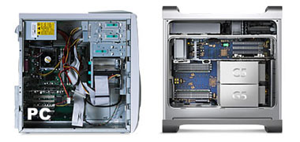

Great times to be a Mac fan
vrijdag 27 juni 2003 | Actualiteit
Deze week stond opnieuw volledig in het teken van de nieuwste reeks innovaties van Apple. CEO Steve Jobs zette maandag vriend en vijand te gapen tijdens zijn keynote in San Francisco. Wegens omstandigheden heb ik de presentatie pas gisterenavond kunnen bekijken. Meestal hou ik zoiets tien à vijftien minuten vol, vooral wanneer bedrijven als Microsoft hun nieuwste ‘filosofieën’ en ‘visies’ uit de doeken doen. Dit keer had Jobs’ twee-uur-durende keynote meer weg van een spannende film, of, als je op de reacties van het publiek afging, een spectaculaire trapeze-act. Fervente Wintel-gebruikers raad ik ten stelligste af even te zappen door het Quicktime filmpje. Groen zullen hun wangen kleuren van jaloezie.
Mac OS X, ondertussen de meest verspreide UNIX distributie ter wereld, is jaren voor op zijn tijd! En de nieuwste versie ervan, Panther, ziet er gelikter uit dan ooit. De beste browser ter wereld Safari is inmiddels uit de bèta rekken, en de G5, tja… of ie nu de snelste pc is ter wereld of niet, who cares. Het is de mooiste en meest afgewerkte computer ooit als je ‘t mij vraagt – én stil!
Ach, en er is nog zo veel meer. Innovaties, innovaties, innovaties, … Het is zoals in de reclame van Mc Kain frietjes: zij die er het meest over praten (Microsoft), zijn zij die er het minst van eten. Apple verdient een groter marktaandeel, maar dat komt nog wel.
Wat ik best grappig vond, was de vergelijking tussen Apple’s nagelnieuwe webcam (meteen ook de beste ter wereld – tja, ik kan er niet aan doen!), en een van de bekendste en meest verkochte webcams tot nu toe, de iBot. De iBot is een zoveelste cheap rip-off van een Apple design. Helaas mogen alle na-apers nu opnieuw beginnen, want Apple gooit met de G5 haar designlijn helemaal overhoop. Met glans overigens.
